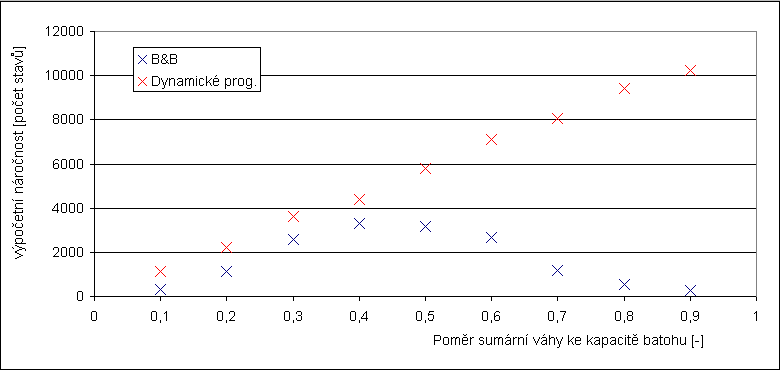
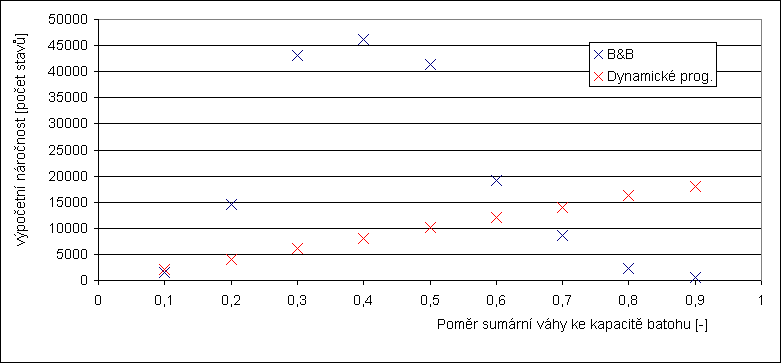
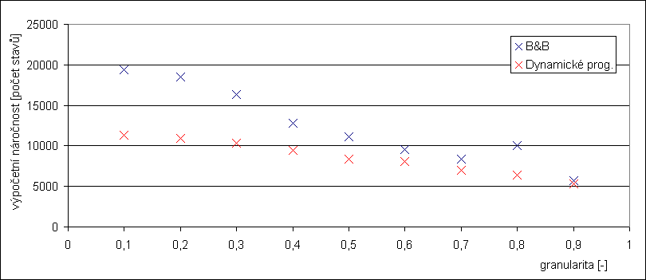
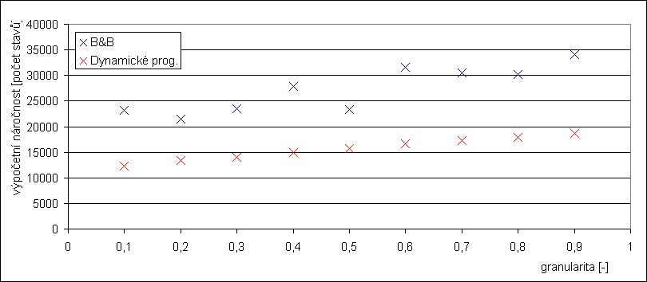
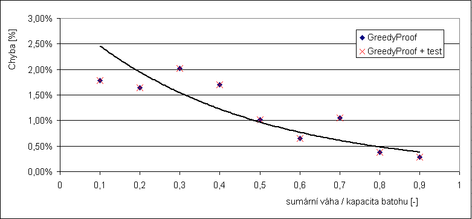
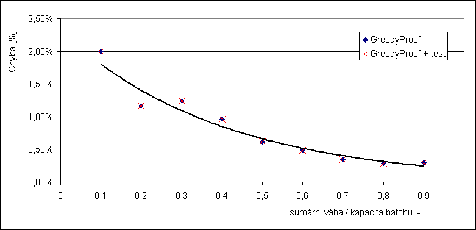
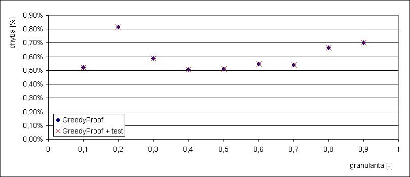

Zadání
- Prozkoumejte citlivost metod øešení problému batohu na parametry instancí generovaných generátorem náhodných instancí. Máte-li podezøení na další závislosti, modifikujte zdrojový tvar generátoru.
- Na základì zjištìní navrhnìte a proveïte experimentální vyhodnocení kvality øešení a výpoèetní nároènosti.
- Pokud možno, prezentujte algoritmy jako body v ploše, jejíž souøadnice jsou výše uvedená kritéria.
Postup experimentu
Nejprve jsem sjednotil úlohy Batoh 1 a Batoh 2 do jediného projektu. Pøidal jsem druhý výstup do kterého se ukládají prùmìrné hodnoty poètu operací v pøípadì exaktních metod a relativních chyb v pøípadì heuristik.
Pro generování instancí jsem použil Webový generátor instancí problému batohu. V pøedešlých úlohách jsme porovnávali výpoèetní nároènost algoritmù v závislosti na velikosti instance. Proto jsem se soustøedil na získání závislosti výpoèetní nároènosti a chyby v závislosti na pomìrné kapacitì batohu a granularitì vkládaných vìcí. Pro experimenty jsem použil toto nastavení (pokud není uvedeno jinak):
Velikost instance: 20, Poèet instancí: 50, Maximální váha vìci: 100, Maximální cena vìci: 250
Namìøené hodnoty a výsledky
V tabulce a grafech jsou zobrazeny prùmìrné hodnoty.
Tabulka: Závislost výpoèetní nároènosti na kapacitì batohu (pro velikost instance = 15)
| pomìr sumární váhy ke kapacitì batohu / algoritmus | BF | B&B | Dynamické prog. | GP |
|---|---|---|---|---|
| 0,1 | 345,5 | 304,2 | 1137 | 15 |
| 0,2 | 1817,4 | 1131,3 | 2238 | 15 |
| 0,3 | 5932,9 | 2566,1 | 3606 | 15 |
| 0,4 | 14287,2 | 3322,5 | 4387,5 | 15 |
| 0,5 | 21961,7 | 3187,8 | 5793 | 15 |
| 0,6 | 28282,3 | 2664,5 | 7099,5 | 15 |
| 0,7 | 31672,4 | 1178,9 | 8038,5 | 15 |
| 0,8 | 32642,6 | 539,7 | 9402 | 15 |
| 0,9 | 32760,5 | 285,5 | 10243,5 | 15 |
Dle mého názoru nemá praktický význam zde uvádìt veškeré namìøené hodnoty. Daleko lepší vypovídající hodnotu mají grafy, které následují.
Za zmínku pouze stojí porovnání výpoèetní složitosti Hrubé síly (BF) s ostatními algoritmy.
Graf 1: Závislost výpoèetní nároènosti na kapacitì batohu (pro velikost instance = 15)
Nastavení generátoru: Velikost instance: 15, Poèet instancí: 10, Maximální váha vìci: 100, Maximální cena vìci: 100
Graf 2: Závislost výpoèetní nároènosti na kapacitì batohu (pro velikost instance = 20)

Graf 3: Závislost výpoèetní nároènosti na granulritì instance (pøevaha malých vìcí)
Charakter granularity nastaven na "Více malých vìcí".

Graf 4: Závislost výpoèetní nároènosti na granulritì instance (pøevaha velkých vìcí)
Charakter granularity nastaven na "Více velkých vìcí".

Graf 5: Závislost relativní chyby na kapacitì batohu (pro velikost instance = 15)
Velikost instance: 15, Poèet instancí: 10, Maximální váha vìci: 100, Maximální cena vìci: 100
Graf 6: Závislost relativní chyby na kapacitì batohu (pro velikost instance = 20)

Graf 7: Závislost relativní chyby na granularitì instance

Závìr
Z grafu 1 a 2 je dobøe patrné, že algoritmus vìtví a hranic (B&B) dosahuje nejhorší výpoèetní nároènosti pokud je pomìr sumární váhy ke kapacitì batohu roven 0,3 až 0,5.
Dále je patrná lineární závislost výpoèetní nároènosti dynamického programovaní. Ta je vypoètena jako rozmìr pole, tj. kapacita x poèet vìcí. Poèet vìcí je konstantní, ale mìní se kapacita batohu, címž je ovlivnìno mìøení. Pokud by generátor zachoval kapacitu konstantní, byla by i závislost konstantní.
Chyba heuristiky se zmenšuje s rostoucím pomìrem sumární váhy ke kapacitì batohu. Naproti tomu o závislosti chyby heuristiky na granularitì nemùžeme z provedeného experimentu nic usoudit, hodnoty jsou témìø náhodné.